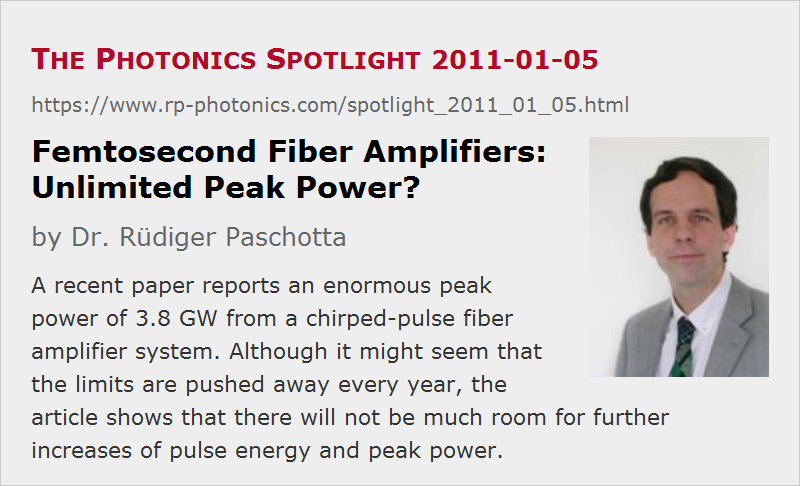

Femtosecond Fiber Amplifiers: Unlimited Peak Power?
Posted on 2011-01-05 as a part of the Photonics Spotlight (available as e-mail newsletter!)
Permanent link: https://www.rp-photonics.com/spotlight_2011_01_05.html
Author: Dr. Rüdiger Paschotta, RP Photonics Consulting GmbH
Abstract: A recent paper reports an enormous peak power of 3.8 GW from a chirped-pulse fiber amplifier system. Although it might seem that the limits are pushed away every year, the article shows that there will not be much room for further increases of pulse energy and peak power.
Ref.: T. Eidam et al., “Fiber chirped-pulse amplification system emitting 3.8 GW peak power”, Opt. Express 19 (1), 255 (2011); encyclopedia articles on chirped-pulse amplification, fiber amplifiers, self-focusing

Recent advances of the performance of ultrashort pulse fiber amplifier systems are impressive. A recent Optics Express paper (see the reference above) reported 3.8 GW of peak power after compression, whereas some earlier papers of that research group concentrated more on extremely high average powers.
A superficial look at the achievements in recent years may create the impression that despite all the fiber nonlinearities, even the peak power of such systems is essentially unlimited. Unfortunately, that's not true, as can be shown with some relatively simple calculations:
Within any glass fiber (e.g., of an amplifier), the peak power is limited to a few megawatts, because catastrophic self-focusing would set in at slightly higher powers. Surprisingly and unfortunately, the self-focusing threshold is independent of the effective mode area. Therefore, further increases of that area would not solve the problem. Also, it seems unlikly that improved materials will help much, since silica is already one of the best materials in that respect.
Now, the pulse energy from such an amplifier is essentially the peak power times the pulse duration. For a high pulse energy, one has to strongly stretch the pulses in time (within the amplifier fiber), using a dispersive compressor. The paper cited above reported a stretched pulse duration of ≈ 3 ns, which is already fairly long – one requires a rather large stretcher (and also compressor) for that. It is actually easy to see that a pulse stretcher or compressor for pulse durations of multiple nanoseconds cannot be small: within that time, light travels over a distance of nearly 1 m, so one needs quite some space for delaying some part of the optical spectrum by a few nanoseconds against some other part. By the way, long stretching durations do not only make compressors and stretchers large, but also harder to align. In principle, some new type of compressor may be invented which removes that limitations. I cannot see however, how this should work.
By simply multiplying a maximum peak power of a few megawatts with a maximum stretched pulse duration of a few nanoseconds, we obtain a pulse energy of the order of 10 mJ. Some of that will be lost in the compressor, but let us assume that a low-loss compressor is used, and we really get about 10 mJ of compressed energy. This is about 5 times the energy reported in the paper cited above, so there is some room for improvement, but not that much.
Finally, the output peak power is essentially the pulse energy divided by the compressed pulse duration. The paper above reported about 500 fs. Let us be optimistic and assume that 200 fs will be achieved with 10 mJ. For a perfect compressor, leading to transform-limited pulses, the output peak power could then be ≈ 0.9 × 10 mJ / 200 fs = 45 GW. That would be still an order of magnitude higher than now reported. Nevertheless, it shows that the end of the game is close; the rapid advances of previous years cannot be continued for long!
We see once again that just extrapolating past performance advances into the future can be highly misleading. That can never replace a proper analysis, although there are always people believing that it works like that. Often enough, that belief has been applied to share prices, although we can know that this doesn't work!
This article is a posting of the Photonics Spotlight, authored by Dr. Rüdiger Paschotta. You may link to this page and cite it, because its location is permanent. See also the RP Photonics Encyclopedia.
Note that you can also receive the articles in the form of a newsletter or with an RSS feed.
Questions and Comments from Users
Here you can submit questions and comments. As far as they get accepted by the author, they will appear above this paragraph together with the author’s answer. The author will decide on acceptance based on certain criteria. Essentially, the issue must be of sufficiently broad interest.
Please do not enter personal data here; we would otherwise delete it soon. (See also our privacy declaration.) If you wish to receive personal feedback or consultancy from the author, please contact him e.g. via e-mail.
By submitting the information, you give your consent to the potential publication of your inputs on our website according to our rules. (If you later retract your consent, we will delete those inputs.) As your inputs are first reviewed by the author, they may be published with some delay.
|  |
If you like this page, please share the link with your friends and colleagues, e.g. via social media:
These sharing buttons are implemented in a privacy-friendly way!